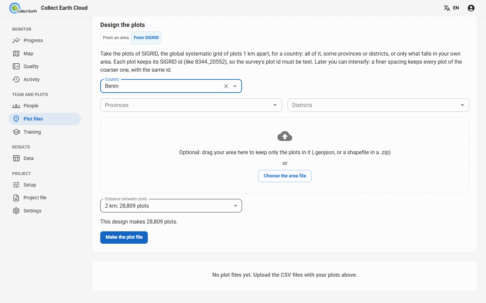
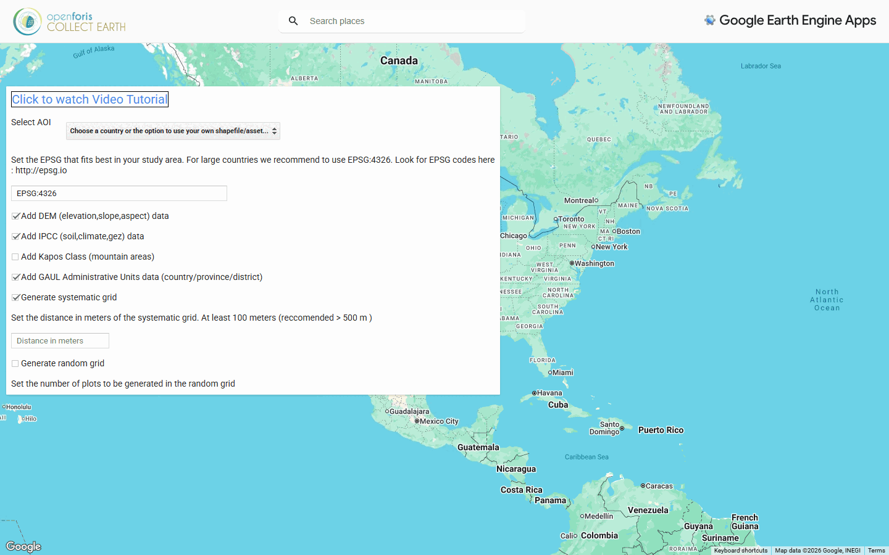
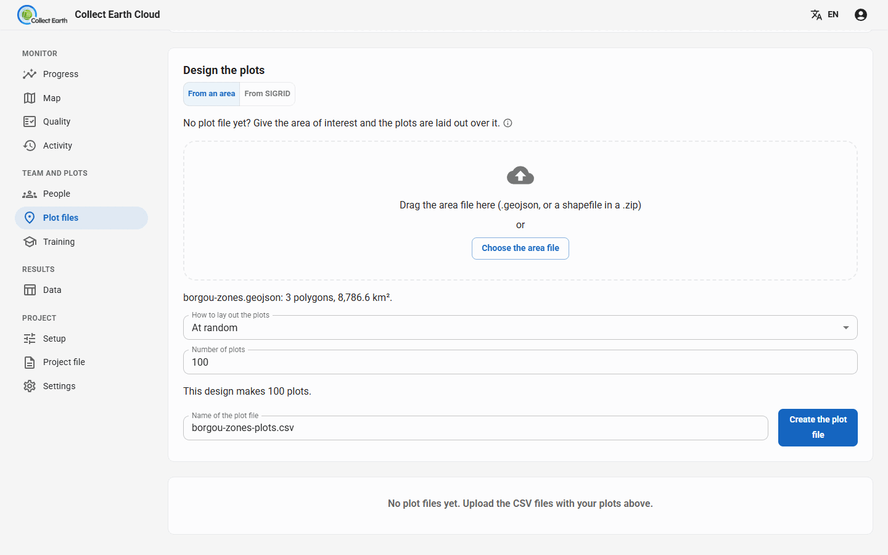

Designing the sample
Before anyone assesses a plot, you decide where the plots are: the sampling design. Collect Earth reads it from a plot file, a CSV with one row per plot. This guide shows three ways to make one: SIGRID, the global systematic grid; the Collect Earth Grid Generator on Google Earth Engine; and the dashboard's own Design the plots.
What a plot file holds
Each row is one plot: its id, its latitude and longitude, then any extra columns the survey expects, for example:
id,YCoordinate,XCoordinate,elevation,slope,aspect,climate,soil,gez,country,province,district 8344_20552,9.8123,2.6114,342,2,180,4,5,31,Benin,Borgou,Parakou
Coordinates are in decimal degrees (WGS84). The extra columns are shown to the interpreter beside the plot and kept with the answers, so the results can be analysed by province, climate zone or elevation without any later GIS work. The survey designer decides which columns a survey expects. Collect Earth reads the extra columns by position, so keep them in the order the survey expects.
Which design?
- Systematic grid: plots at a fixed distance from each other. It covers the area evenly, is easy to explain and to repeat, and suits national land use and forest assessments. This is what most Collect Earth projects use.
- Random: a given number of plots at random places in the area. Useful for a quick estimate or a validation sample.
- Stratified random: plots at random within each stratum (a forest reserve, a land cover class, a province), with the same number in each or shared by area. It puts more effort where it matters, such as rare classes.
| SIGRID | Grid Generator (Earth Engine) | Design the plots (dashboard) | |
|---|---|---|---|
| Designs | Systematic, 1 to 100 km apart | Systematic (from 100 m) or random | Random, systematic, stratified random |
| Area | A country, its provinces or districts, optionally clipped to your own area | A country, province or district, your own asset, a drawn polygon or pasted GeoJSON | Your own area file (GeoJSON or a zipped shapefile) |
| Extra columns | Province and district (when the survey has adm1nm and adm2nm columns); elevation, slope and aspect are 0 | Elevation, slope, aspect, soil, climate, ecological zone, mountain class, land productivity, administrative units, columns of your own layers | None (elevation, slope and aspect are 0) |
| Plot ids | Permanent, the same worldwide | Numbered for this grid | Numbered for this grid |
| Needs | A cloud project (on the dashboard), or nothing (download) | A Google account with Earth Engine | A cloud project |
SIGRID, the global systematic grid
SIGRID (Systematic Iterative GRID) is one grid for the whole world, with plots 1 km apart. Other grids made in degrees squeeze together towards the poles; in SIGRID the distance between plots stays about the same at any latitude, because each row works out how many degrees of longitude make 1,000 metres at its own latitude. Rows run from 85°N to 85°S.
Grids nested inside each other
Coarser grids are subsets of the 1 km grid: one plot in 4 belongs to the 2 km grid, one in 9 to the 3 km grid, one in 16 to the 4 km grid, and so on, at 1, 2, 3, 4, 5, 6, 8, 9, 10, 12, 15, 16, 20, 25, 30, 50 and 100 km. Every plot keeps the same id in every grid: 2000_3300 is the plot in row 2,000 and column 3,300, counted in kilometres from the grid's origin at 85°N, 169°W.
That makes it iterative: start with a coarse grid (say 8 km) for a first national estimate, then intensify to 4 km, 2 km or 1 km where you need more precision. The plots already assessed keep their ids and stay part of the finer grid, so no work is lost, and assessments of later years land on exactly the same plots.
Getting a SIGRID plot file
- On the dashboard (easiest, in a cloud project): on the Plot files tab, under Design the plots, choose From SIGRID. Pick the Country, optionally some Provinces or Districts, optionally drop your own area to keep only the plots in it, and choose the Distance between plots: each option shows how many plots it makes. Press Make the plot file.
- Downloads: Open Foris publishes one package per country, with a 1 km file tagged with province and district names (UN boundaries) and one file per coarser spacing, and 10° by 10° tiles for any area. A KMZ in the repository lets you browse them in Google Earth.
- Generate it yourself: the SIGRID repository holds the Java code (MIT licence) to rebuild any region or the whole world, into CSV files or a database.

8344_20552, so the survey's plot id must be text, not a number. A 1 km grid of a whole country can hold millions of plots: choose the spacing that gives the number of plots your team can assess. The dashboard makes at most 50,000 plots per file; for more, download the SIGRID package.The Grid Generator on Google Earth Engine
The Collect Earth Grid Generator makes a systematic or random grid for any area and adds data from Google Earth Engine to every plot, ready for Collect Earth. There is a video tutorial.

- Select AOI, the area of interest: a country, then a province or district (GAUL 2015 administrative boundaries); or your own polygons uploaded to Earth Engine as an asset (it must be shared or public); or a polygon drawn on the map; or GeoJSON pasted as text (made with mapshaper.org, QGIS or ogr2ogr).
- The projection (EPSG code) the grid is laid out in. EPSG:4326 is recommended for large countries; for a small area a local projection keeps the distances exact (see epsg.io).
- Generate systematic grid, with the distance between plots in metres (at least 100 m, more than 500 m recommended), and/or Generate random grid, with the number of plots.
- The data to add to each plot:
- Add DEM (elevation, slope, aspect) data
- Add IPCC (soil, climate, gez) data: IPCC soil and climate classes and the FAO global ecological zone
- Add Kapos Class (mountain areas)
- Add Land Productivity Dynamic data
- Add GAUL Administrative Units data (country/province/district)
- Add columns from other shapefiles: up to seven of your own layers loaded as Earth Engine assets, such as a forest map or management units
- Press Generate grids, then click the download link to get the CSV.
The address in the browser changes with every choice: copy it to make the same grid again later, or to share the exact design with a colleague. If the download link times out, the grid is too large for the app: follow its link to run the same script in the Earth Engine Code Editor, which exports the file to your Google Drive. The app also links to a test project file (.cep) that reads its standard extra columns, and to the area of each province and district, handy for turning plot counts into hectares.
Design the plots on the dashboard
In a cloud project, the Plot files tab can lay plots out over your own area without leaving the dashboard. Under Design the plots, choose From an area and drop a GeoJSON file, or a shapefile of polygons in a .zip, in latitude and longitude. Then choose How to lay out the plots:
- At random: the Number of plots.
- On a grid: the Distance between plots (metres), optionally starting the grid at a random place.
- At random within strata: the Field with the strata in your area file, and the plots per stratum: The same number in each, or Shared by area.
The dashboard shows how many plots the design makes, and per stratum how many plots and how many km². Create the plot file adds it to the project as if you had uploaded it. Nothing is sent outside your server; elevation, slope and aspect are left at 0, so if your survey needs them, use the Grid Generator instead.

Using the plot file
- Cloud project: upload the CSV on the Plot files tab (files made on the dashboard are there already), then give it out: whole, divided evenly, or by a column such as the province. See Running a cloud project.
- On one computer: in Collect Earth, Settings › Project › Path to ced/csv file with plot data. The settings show how many plots the file holds, its first rows and where the plots are.
- The plot's shape on the imagery (a square, a circle, a hexagon, clusters, and the sampling points inside it) is set in Settings › Plot layout. A plot file can also carry its own polygons in a WKT, KML or GeoJSON column, drawn as they are.
- Too many plots for one person: Utilities › Divide large CSV plot files in Collect Earth splits a file, at random or by a column; on the dashboard, Divide plots does it for you.